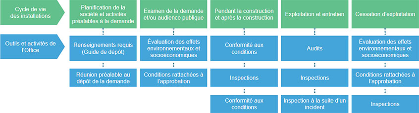

Le mercredi 28 août, l’Office national de l’énergie est devenu la Régie de l’énergie du Canada. Pour de plus amples renseignements, consultez la page d’information sur la mise en œuvre de la Loi sur la Régie canadienne de l’énergie
Fiche de renseignements : Sûreté des pipelines
Fiche de renseignements : Sûreté des pipelines [PDF 377 ko]
En 2016
Les sociétés réglementées par l’Office ont déplacé
plus d’un milliard de barils de produits liquides dans leurs pipelines.
Il s’agit d’un volume suffisant pour remplir le réservoir d’essence de plus de 44 milliards de voitures.
Au Canada, un vaste réseau pipelinier sous-terrain achemine chaque jour des millions de litres de pétrole et de gaz. Les Canadiens poursuivent leurs efforts en vue de trouver de nouvelles façons de produire de l’énergie, mais dans l’immédiat, les pipelines constituent le moyen le plus sûr et le plus efficace de transporter de grands volumes de produits d’un bout à l’autre de l’immense pays qu’est le Canada et au-delà de nos frontières.
L’Office national de l’énergie a comme mandat de s’assurer que les sociétés font tout ce qui est en leur pouvoir pour que leurs pipelines demeurent sûrs. Notre travail commence avant même la mise en chantier, par l’examen de la demande, qui vise à s’assurer que le projet est nécessaire et qu’il peut être réalisé en toute sécurité. La tâche de l’Office ne s’arrête toutefois pas une fois qu’il a rendu une décision sur un projet. Elle se poursuit pendant tout le cycle de vie du projet, de la construction à l’exploitation et jusqu’à la cessation d’exploitation. Nous faisons cause commune avec les collectivités pour que l’infrastructure énergétique soit la plus sûre possible.
L’Office a des exigences strictes en matière de sûreté, que les sociétés doivent respecter pour pouvoir exploiter leurs pipelines. Ces exigences portent sur des aspects aussi variés que les matériaux de fabrication de la canalisation et les mesures qui doivent être prises pour protéger la population et l’environnement. Lorsque les règles imposées – qui sont conçues pour cerner les dangers et gérer les risques – sont respectées, les pipelines constituent un moyen sûr et fiable d’acheminer pétrole et gaz.
Par des vérifications approfondies de la sûreté, l’Office suit de près les activités des sociétés pour s’assurer qu’elles respectent les règles en place. De plus, il rencontre régulièrement les sociétés pour discuter de préoccupations d’ordre technique précises et évaluer leur degré de préparation en cas d’urgence. Il peut ainsi relever certaines situations avant qu’elles ne deviennent problématiques.
C’est aux sociétés qu’incombe la responsabilité ultime en matière de sûreté des pipelines. Leur objectif doit être de zéro déversement et nous les tenons responsables de tout mettre en œuvre pour y parvenir. L’Office sait pertinemment que les produits transportés par pipeline peuvent être dangereux s’ils ne sont pas manutentionnés correctement. C’est pourquoi les sociétés doivent cerner tous les problèmes possibles et élaborer un plan et des mesures précises pour les prévenir.
Même si les pipelines en acier sont extrêmement résilients, ils exigent des inspections et un entretien adéquats pour demeurer sûrs. Les sociétés doivent surveiller leurs pipelines en tout temps, et les inspecter régulièrement, en plus de mener des fouilles exploratoires pour en vérifier l’état sous terre. Elles ont recours à des outils extrêmement perfectionnés pour sonder l’intérieur des canalisations et détecter les anomalies qui pourraient créer des problèmes.
L’Office s’attend aussi à ce que les sociétés adoptent ce qu’on appelle une culture de sécurité. Celle-ci ne se limite pas à la prévention des blessures; elle englobe la gestion de tous les aspects d’une entreprise qui peuvent avoir une incidence sur la sécurité et l’environnement, qu’il s’agisse du processus d’embauche, des budgets ou des priorités. Lorsque la culture de sécurité est adoptée de tous, peu importe le poste occupé, chacun a la possibilité de prendre des décisions importantes à ce sujet. De telles décisions sont non seulement appuyées par la direction, elles sont récompensées.
Malgré cela, parfois, les sociétés ne font pas ce qu’elles sont censées faire. Dans de tels cas, l’Office agit. L’Office dispose d’outils puissants conçus pour ramener les sociétés dans le droit chemin et les décourager de commettre à nouveau les mêmes erreurs. L’imposition d’amendes, la réduction du volume de produit acheminé dans les pipelines ou l’interruption complète du transport en sont des exemples. Quelles que soient les mesures prises, l’objectif visé est toujours le même : assurer la sûreté des pipelines.
L’Office est une équipe hautement spécialisée qui regroupe notamment des ingénieurs, des auditeurs, des inspecteurs, des intervenants d’urgence, des spécialistes de l’engagement et des avocats. Tous sont extrêmement fiers du travail qu’ils accomplissent pour veiller sur les intérêts des Canadiens. Ils savent qu’ils influencent le cours des choses en maintenant l’infrastructure énergétique sûre et fiable, et ils poursuivent leur travail en vue d’assurer une sécurité toujours plus grande.
Présence sur le terrain
En 2015, les inspecteurs de l’Office ont mené 142 inspections relativement à des aspects importants de la sécurité pipelinière. De plus, ils ont réalisé :
Version texte du graphique
En 2015, les inspecteurs de l’Office ont mené 142 inspections relativement à des aspects importants de la sécurité pipelinière. De plus, ils ont réalisé :
20 exercices d’urgence;
13 examens de manuels de mesures d’urgence;
137 réunions de conformité;
6 audits;
30 analyses de rapports.
Activités d’audit menées en 2016

Version texte du graphique
- Cycle de vie des installations
- Outils et activités de l'Office
- Planification de la société et activités préalables à la demande
- Renseignements requis (Guide de dépôt)
- Réunion préalable au dépôt de la demande
- Examen de la demande et/ou audience publique
- Évaluation des effets environnementaux et socioéconomiques
- Conditions rattachées à l'approbation
- Pendant la construction et après la construction
- Confirmité aux conditions
- Inspections
- Conformité aux conditions
- Exploitation et entretien
- Audits
- Inspsections
- Inspection à la suite d'un incident
- Cessation d'exploitation
- Évaluation des effets environnementaux et socioéconomiques environnementale et socioéconomique
- Condition rattachées à l'approbation
- Inspections
- Date de modification :